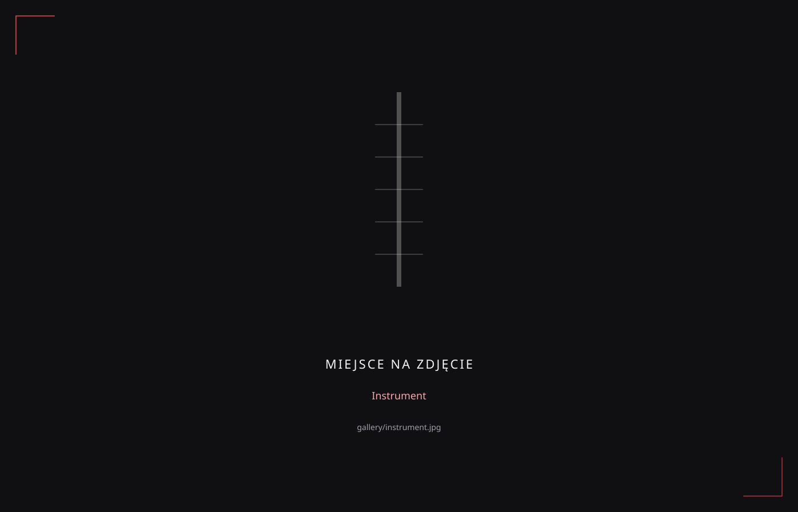
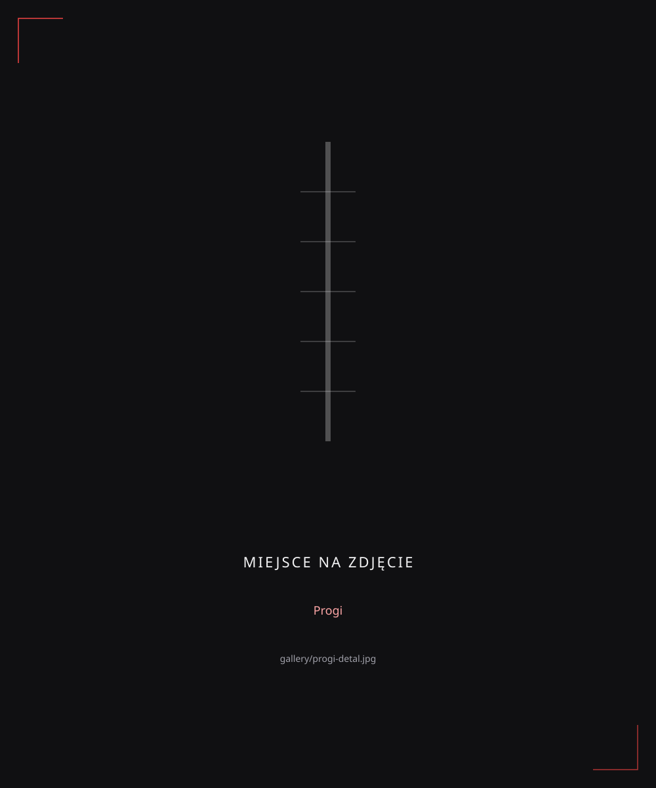

Podstawowy serwis
Krótkie prace przy instrumencie, z ceną za konkretną czynność.
- Przegląd gitary50 zł
- Czyszczenie korpusu i gryfu30 zł
- Czyszczenie i konserwacja podstrunnicy40 zł
- Wymiana strun40 zł + struny
- Strojenie15 zł
01 Szczecin
Gitara ma grać. Nie przeszkadzać.
Serwis gitar elektrycznych, akustycznych, klasycznych i basowych. Regulacja, czyszczenie, wymiana strun oraz wybrane prace przy progach i osprzęcie. Zakres i koszt ustalamy przed rozpoczęciem prac.
Elektryczne Akustyczne Klasyczne Basowe

02 Oferta
Naprawa gitar w Szczecinie obejmuje podstawowy serwis, regulację gitar elektrycznych i akustycznych, polerowanie progów, szlifowanie progów oraz wybrane prace przy osprzęcie. Regulacja Floyd Rose jest osobną pozycją.
Krótkie prace przy instrumencie, z ceną za konkretną czynność.
Cena zależy od instrumentu i mostka. Menzura nie wchodzi w regulację. Jest osobną usługą.
Wykończenie progów, które nie wymagają zbierania materiału.
160 zł
Praca przy progach, które są nierówne. Cena zaczyna się od podanej kwoty, bo zakres zależy od ich stanu.
od 360 zł
Cena obejmuje pracę. Klucze doliczamy osobno.
80 zł + części
Ekranowanie elektroniki gitary taśmą miedzianą.
280 zł
03 Cennik
Te same pozycje co w ofercie, w jednej tabeli.
| Podstawowy serwis | |
|---|---|
| Przegląd gitary | 50 zł |
| Czyszczenie korpusu i gryfu | 30 zł |
| Czyszczenie i konserwacja podstrunnicy | 40 zł |
| Wymiana strun | 40 zł + struny |
| Strojenie | 15 zł |
| Regulacja | |
| Regulacja gitary elektrycznej – mostek stały | 120 zł |
| Regulacja tremolo jednostronnego | 135 zł |
| Regulacja Floyd Rose | 200 zł |
| Regulacja gitary akustycznej | 135 zł |
| Regulacja gitary klasycznej | 120 zł |
| Regulacja menzury | 65 zł |
| Progi i osprzęt | |
| Polerowanie progów | 160 zł |
| Szlifowanie progów | od 360 zł |
| Wymiana kluczy | 80 zł + części |
| Ekranowanie taśmą miedzianą | 280 zł |
Ceny mają charakter orientacyjny. Koszt części i materiałów dodatkowych jest doliczany tam, gdzie nie został uwzględniony w cenie. Ostateczny zakres prac i koszt potwierdzamy przed rozpoczęciem serwisu.
04 Proces
05 Realizacje
Nie ma tu jeszcze dokumentacji napraw. Plansze czekają na zdjęcia instrumentów, progów oraz ujęć przed i po. To nie są wykonane zlecenia.


Kolejną realizację dodajesz jako następne zdjęcie w tym bloku, w pliku index.html.
06 Kontakt
GRRITARA.PL serwisuje gitary w Szczecinie i jest powiązana z Golden Rain Records. Napisz, jaki to instrument i co w nim przeszkadza.
Szczecin